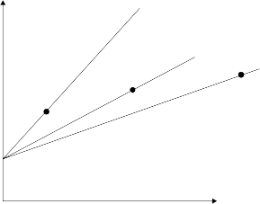
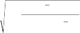
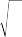
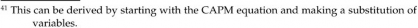

The covariance or correlation of a portfolio with a major index indicates the risk of the portfolio with respect to the index. It also indicates the diversification benefits from combining the portfolio with other portfolios. The covariance of a portfolio ex ante or ex post can be constructed from the individual securities that make up the portfolio. We showed how to do this in Chapters 6 and 7. Here we show how to take a set of portfolio returns and compute the covariance and correlation.
The covariance of the portfolio with any other index is com- puted by gathering the returns of the portfolio and the index and computing the following:
Cr , r 1 r
T
r r r

(15.21)
P I T t1
P,t P I ,t I
The correlation between the portfolio and the index can be com- puted as follows:
, r
, r
, r
r
CrP , rI
(15.22)
P I P I
where P and I are the standard deviations of the portfolio and the index over the sample period. The correlation is more pleasant to deal with than the covariance because it always must be between
—1 and 1. A correlation of 1 represents two return streams that always move together. A correlation of —1 represents the other extreme, two return streams that move in opposite directions.
15.4 RISK-ADJUSTED PERFORMANCE MEASUREMENT
Many personal investors focus with tunnel vision on raw returns. This is why, each year, most mutual fund investments flow into the funds that had the best performances or highest returns in the pre- vious year. It is absolutely a mistake, though, to look at returns out of the context of risk. Consider Figure 15.1.
F I G U R E 1 5 . 1
Risk return of three portfolios.

C
C
C
B
B
B
A
A
A
Return
rf
Risk
Looking only at returns, one would conclude that portfolio manager C is the best. Manager C has the highest return over the period, manager B has the second highest, and manager A has the lowest return over the period. Portfolio manager A would be con- sidered the worst manager. One notices, though, that portfolio manager C is taking on a lot more risk than portfolio managers A and B. If we borrowed—using the risk-free asset of a margin account—at some given interest rate rf , we could increase the
returns and the risk of portfolio manager A. If we borrowed
enough, we could increase his or her risk until it was equal to the risk of portfolio manager C. At that same risk level, portfolio manager A’s return actually would be much higher than portfolio manager C’s.25 The most accurate comparison of portfolio man- agers, therefore, is a comparison not of returns but of risk-adjusted returns. One of the most important measures of risk-adjusted returns is the Sharpe ratio.

A
A
A
25 Mathematically, one can observe that if the expected leveraged return of portfolio A is El(rA) = (1+)A — rf , and the risk of the leveraged portfolio A is l = (1+)A, then a leveraged portfolio A with the same risk as portfolio C always will have a higher expected return if (A — rf)/A > (C — rf)/C. This condition is that the slope of the line through the risk-free rate, and portfolio A is greater than the slope of the line through the risk-free rate and portfolio C.
15.4.1 The Sharpe Ratio
William F. Sharpe won the Nobel Prize in economics for his devel- opment of the CAPM.26 Among the many things that came out of this work is a measurement for risk-adjusted returns that is appro- priately called the Sharpe ratio. The Sharpe ratio (SR) measures the portfolio’s excess return above the risk-free rate per unit of risk. It is given by

SR rP rf
P
(15.23)
where SR is the Sharpe ratio, rP is the portfolio return, rf is the risk- free rate, and P is the standard deviation of the portfolio returns.27 In practice, this ratio is computed as follows: Suppose that one has the monthly returns of a portfolio. One should take the arithmetic
average of those returns. Thus, if one has 25 months of monthly
portfolio returns, one should compute the average as –r = –1 25 r .
P 25 t=1 P,t
This value should be used for rP. For the risk-free rate, the exact value actually does not matter for comparison purposes, as long as some consistent rate is chosen. Many people use the average monthly return on 1-month or 3-month U.S. Treasury bills as rf .28 Finally, one needs to compute the portfolio risk over the period by taking the monthly returns and computing the standard devia-
tion of the monthly returns. One can use the basic formula:
ˆP =J T
(r — –r )2/ (T — 1)
t=1 P,t P
The Sharpe ratio provides a basis for comparing portfolios. In isolation, it does not mean much. Even when managers speak of “good” and “bad” Sharpe ratios, they are speaking only in relative

26 Jan Mossin, John Linter, and Jack Treynor also did work at the same time as Sharpe to develop the CAPM. Some people refer to this as the Linter-Mossin-Sharpe-Treynor CAPM.
27 When returns are nonnormal, it is better to divide the numerator by the semi-standard deviation. This modified Sharpe ratio is also known as the Sortino ratio. Risk- adjusted hedge fund returns are sometimes measured with the Sterling and Calmar ratios, which are ratios of the annualized returns of the portfolio over some period divided by a type of downside risk measure known as drawdown. Drawdown measures the absolute value of the return loss from the peak to trough of the portfolio value. The peak and trough are recognized, once a new peak is reached by the portfolio. The Calmar ratio uses the absolute maximum drawdown over the measurement period, while the Sterling ratio uses the absolute average drawdown minus some constant.
28 To save computational time, some people just use the average of the yields on the short-
term instrument, although this is not technically correct, especially for longer-term short-term debt instruments. Overall, it does not make a big difference either way.
terms.29 If portfolio manager A has the highest Sharpe ratio of several managers, you can say that he or she has the highest risk-adjusted return of the managers for the period. If you actually believe that there is something inherently stable about portfolio manager A’s performance, then you could leverage portfolio man- ager A and achieve the return of any other manager with lower risk. Of course, there is no guarantee that the same risk-adjusted return will continue in the next period.
15.4.2 The Information Ratio
The information ratio (IR) measures the risk-adjusted performance of portfolio managers who manage to a benchmark. It is the ratio of the excess return or they produced to the residual risk or track- ing error they took on with respect to the benchmark.30 An index manager should have an IR of 0 because his or her theoretically should be 0, and his or her residual risk theoretically should be 0. An active portfolio manager intentionally deviates from the bench- mark weightings to outperform the benchmark. This creates his or her and also generates residual risk or tracking error versus the benchmark. Thus the information ratio is defined as
ˆ B

IR ˆ
(15.24)

29 For example, some portfolio managers say that a Sharpe ratio above 0.5 is really good. What they are really saying is, “Of all the portfolios I’ve seen managed, I haven’t seen a Sharpe ratio above 0.5 too often.”
30 Some portfolio managers measure the ex-post information ratio as IR = (–r — –r )/
where –r
is the average return of the portfolio and –r
P B x
P B is the average return of the

1
1
1
ˆ
ˆ
ˆ
2
2
2
2 2
2 2
2 2
B
B
B
,
,
,
benchmark over the measurement period. x is the standard deviation of the difference in returns between the portfolio and the benchmark. This is also known as the tracking error. Although this measure is easier to compute, it is technically
incorrect. In fact, this measure is actually equal to where 2 is the residual variance of the portfolio.
IR
rP rB


x
ˆ ˆ 1rB
Thus, the two measures of information ratio are only equal when the measured of the portfolio versus the benchmark is equal to 1, otherwise they are different.
Although, one cannot make generalizations, for ˆ > 0 and –rB (ˆ — 1) < 0, the true
information ratio will be higher than the incorrect measure. Thus, for upward
drifting markets, of all portfolio managers with a < 1, the less aggressive good portfolio manager will be measured with a lower information ratio than his or her
peers unjustly. For ˆ < 0 and –rB (ˆ — 1) > 0 the true information ratio will be lower
than the incorrect one. Thus, in an upward drifting market, of all portfolio managers
with a > 1 the more aggressive bad portfolio manager will have a higher information ratio than his or her peers unjustly. When ˆ = 1, the information ratio is
similar to the Sharpe ratio with the benchmark replacing the risk-free asset.
where ˆ B is the estimate of from the regression of the portfolio returns on the benchmark returns for the measurement period,
and ˆ is the estimate of the residual standard deviation of the
regression.31
As with the Sharpe ratio, the higher the value of the IR, the better the portfolio manager performed on a risk-adjusted basis. As with the Sharpe ratio, the correct IR is easy to compute over a period. All one needs is the returns of the portfolio and the returns of the benchmark.
The information ratio typically is computed by running a regres- sion of the portfolio returns against the benchmark returns. The idea is that the portfolio manager is being measured against the bench- mark, so we should consider his or her excess risk-adjusted return over the benchmark divided by his or her excess (residual) risk. A regression similar to the Jensen’s (see subsection 15.4.3) is run over the relevant performance measurement period. The estimated , ˆ, is
stored, as well as the residual standard deviation, which is given
by ˆ = JV (E ˆ ), where Eˆ = (r —r )—ˆ(r — r ). All the ingredients to
t t P,t
f,t
B,t
f,t
measure the information ratio come directly from the Jensen’s
regression, with the benchmark replacing the market return.
15.4.3 The CAPM and the Benchmark
In Chapter 2 we discussed the various types of relevant to quantitative equity portfolio management (QEPM). We also briefly discussed the distinction between ex-ante and ex-post . When we measure the risk-adjusted performance of a portfolio, we are always measuring the ex-post . We now discuss the CAPM ( CAPM) and the benchmark ( B) in this light. The CAPM implies the following relationship between the portfolio return and the market index return:
rP,t — rf,t = + (rM,t — rf,t) + Et (15.25)
While the theory itself says that the value of should be zero, practitioners nonetheless estimate and use it as a measure of risk-adjusted return. If is positive, then the portfolio manager has provided an extra return over the market portfolio that is not explained by the extra risk he or she is taking. If the is negative, then the portfolio manager is losing value versus the market portfolio.

31 Some practitioners use the notation ˆE instead of ˆ .
The CAPM is a very popular method for measuring portfo- lio managers’ performance and for ranking portfolio managers. CAPM is also called Jensen’s after a paper that Michael Jensen wrote in 1968 that introduced a new method of determining whether mutual fund portfolio managers outperformed the market. Jensen was essentially trying to determine whether portfolio man- agers had positive ’s. Owing to the large number of mutual funds he studied, he could not determine the benchmark of each one. Instead, he used the market return as a proxy for each benchmark. Given the popularity of the CAPM, it is not surprising that the CAPM equation or single-index model has been used for many other indices and benchmarks. When we estimate the CAPM equa- tion replacing the market portfolio with the benchmark, we call the resulting the benchmark . The benchmark is obtained from the
following regression32:
rP,t = + rBt + Et (15.26)
If the from this regression is positive, it is an indication that the portfolio manager is outperforming the respective index on a risk-adjusted basis, whereas if the value of is negative, this is a sign that the portfolio manager is underperforming the index on a risk-adjusted basis. Both for CAPM and benchmark , not only is the sign of the important, but the analyst also must determine whether the is statistically significant. Most regression analyses will supply the t-statistic of the estimate of .33 Generally, for a large enough sample (e.g., 40), a t-statistic greater than 2 will be sufficient for a 95% confidence level and 2.7 for a 99% confidence level.34 These regressions can be corrected for heteroskedasticity and auto- correlation in the residuals if needed.
15.4.4 The Multifactor
Many studies have shown that the CAPM fails to explain security returns adequately. Thus multifactor models of stock returns have become more popular, especially in performance measurement.35 In academic circles, two models have gained popularity. One is a three- factor model, which includes the market, the small-cap premium,

32 One can think of all the returns as the returns in excess of the risk-free rate.
33 The t-statistic is discussed in Section 15.4.5.
34 Although the analyst can look up the t-distribution in any statistics book, since the critical value depends on the degrees of freedom, which are related to the number of observations, this rule of thumb works for most circumstances.
35 See Fama and French (1993) and Carhart (1997).
and the book-to-market premium. The other is a four-factor model, which includes all the variables in the aforementioned three-factor model in addition to a momentum term.
To compute the multifactor ( MF), one needs to know the returns on the factors that are believed to represent security returns and the portfolio’s returns over time. The multifactor is usually calculated by regressing the monthly or quarterly returns of the portfolio against the return on the market index or benchmark and other factors. The most commonly used multifactor models accept- ed by academics and many practitioners are the two written below:
rP,t — rf,t = + 1(rM,t — rf,t) + 2SMBt + 3HMLt + Et (15.27)
rP,t — rf,t = + 1(rM,t — rf,t ) + 2SMBt
+ 3HMLt + 4PR1YRt + Et (15.28)
where i are the coefficients of each of the factor returns or ex-post factor exposures, (rM — rf) represents the stock market return minus the risk-free rate of return,36 and SMBt, HMLt, and PR1YRt are the value-weighted, zero-investment, factor-mimicking portfolios for size, book-to-market, and momentum. These four factors can be constructed in a variety of ways. We discuss the most common aca- demic constructions of these variables. SMBt is the size factor, which is constructed by subtracting a portfolio of equal-weighted large-cap stocks from a portfolio of equal-weighted small-cap stocks. HMLt is the value factor, which is constructed by subtracting a portfolio of low B/M (book-to-market) ratio stocks from a portfolio with high B/M ratio stocks.37 PR1YR is constructed by ranking all the firms in the NYSE, American Stock Exchange (AMEX), and NASDAQ by

36 Academics typically use a value-weighted portfolio of NYSE, AMEX, and NASDAQ stocks to proxy for the market.
37 Fama and French construct it as SMBt = 1/3 (SmallValue + SmallNeutral + SmallGrowth) — 1/3 (BigValue + BigNeutral + BigGrowth), where the six portfolios in the equation are constructed by dividing the NYSE, AMEX, and NASDAQ stocks into two buckets on either side of the median market capitalization of the stocks. The small and big buckets are further divided into three buckets based on the 70% and 30% break points of book-to-market ratios. These six portfolios then correspond to the names listed
prior, with value being high B/M ratio and growth being low B/M ratio. To construct the HMLt factor, Fama-French use HMLt = 1/2 (SmallValue+BigValue) — 1/2 (SmallGrowth+BigGrowth). The first factor weights the portfolios so that both the small portfolio and big portfolio have about the same average B/M ratio. The second factor weights the portfolios so that the high B/M ratio portfolio and low B/M ratio portfolio have the same weighted average size to remove the size effect. For more
details, see Fama and French (1993). The portfolio manager can create his or her own factor portfolios using similar concepts. There is no need to follow the Fama-French methodology.
their previous 11-month returns and then finding the difference between the returns of two equal-weight portfolios, one consisting of the top 30% of the ranked list, the other the bottom 30%.
If is positive, then the portfolio manager has provided an extra return that is not explained by the extra risk he or she is taking, which is encapsulated by the ’s. If is negative, then the portfolio manager is losing value. However, not only is the sign of the important, but the analyst must determine whether the is statistically significant. Most regression analyses will supply the t-statistic of the estimate of .
When the multifactor is used to judge the performance of a portfolio manager, it tends to rate him or her less favorably than CAPM would because it considers additional risk factors. In fact, it is very common to find a negative value for multifactor . However, there is still a debate over whether it is appropriate to use a multifactor model to judge a portfolio manager’s performance. Some academics believe that the additional risk factors are not truly risk factors in the economy. They argue that the decision to load up on those factors is a decision that should in fact be rewarded. Other academics claim that a multifactor risk model is more appropriate as a surrogate for overall risks in the economy; although the typical Fama-French factors are not real economywide risks, they can act as proxies for them. One also could argue that since almost every com- mercial risk model is a multifactor model, it is inconsistent not to count these factors as risk factors for performance measurement yet include them in the risk model for managing the portfolio. A port- folio manager can outperform the benchmark by loading up on fac- tors that have positive risk premiums or through individual stock picking. Loading up on factors that have a positive premium is a mechanical strategy that could be replicated by a machine. Should bonuses be awarded for this? If you think so, then use a CAPM ver- sion for measuring . If you believe that portfolio managers should be rewarded for their ability to pick individual stocks that have pos- itive ’s after accounting for the multifactor risk in their portfolios, then use a multifactor model to measure . Either way, the debate is sure to continue between defenders of the CAPM and proponents of the multifactor model.38

38 The joke we make to our students is that if you’re a portfolio manager, you want to convince the performance measurement department to use a CAPM-based or Jensen’s measurement. If you’re the CIO, you want to use the multifactor model.
15.4.5 Practical Issues with Risk-Adjusted Measures
Fund-of-fund managers and financial advisors look for good port- folio managers to include in their asset allocations, and CIOs look for good portfolio managers to hire. But what is the measure of a “good” portfolio manager? For an index manager, good means adequately tracking the benchmark; the closer the returns are to the benchmark, the better. For an enhanced index manager or an active manager, good generally means tracking the benchmark but con- sistently earning a higher return than the benchmark’s. Even if we know what we are looking for in a good manager, two obstacles get in the way of finding it. The first is that assessing a manager’s per- formance over an investment period requires a significant amount of data, which may not be available. The second is that we have to assume that past performance is somewhat indicative of future performance. We cannot resolve these problems, but we can look for the signs of a good manager.
Let’s start with benchmark (i.e., Jensen’s ). The t-statistic
generally is used to determine whether the (or any other coeffi- cient in a regression for that matter) of a manager is statistically dif- ferent from a given value or not. The t-statistic is given by t=(ˆ —
0)/Sˆ(ˆ) where Sˆ (·) is the standard error of the estimate of . This
formulation is for testing whether the portfolio manager’s is
significantly different from the given value 0. Typically, as perfor- mance analysts, we care whether or not a positive or negative is
significantly different from 0 rather than being concerned with some other value. Thus our t-statistics are simplified to t=ˆ/Sˆ(ˆ). Fortunately, most software programs that portfolio managers use
produce all the variables from a simple linear regression, including
ˆ, Sˆ (ˆ), and the actual t-statistic. Thus this calculation is simple to
perform. The performance analyst simply compares the calculated value of t with the tc or critical t-statistic in the t-statistic table and determines whether the portfolio manager’s is significant at the desired significance level. As we already stated, for most cases, this is a value greater than 2.
In the special case in which all the classical assumptions of linear regression apply, the t-statistic becomes39

39 The reader should be aware that this formulation for the standard error of ˆ does not apply when standard errors are corrected for heteroskedasticity, autocorrelation, or other effects.

ˆ
ˆ
ˆ
1
1
1
r *2
r *2
r *2
B
B
B
T
T
T
T
T
T
t1
t1
t1
r
r
r
*
*
*
*
*
*
B,t
B,t
B,t
r
r
r
B
B
B
2
2
2
t ˆ
1
1
1
r *2
r *2
r *2
B
B
B
T
T
T
T
t1
T
t1
T
t1
r
r
r
*
*
*
B,t
B,t
B,t
r
r
r
*
*
*
B
B
B
2
2
2
IR
(15.29)
where T is the number of measurement periods (e.g., monthly returns for the portfolio manager and benchmark), r–B* is the average of the benchmark returns minus the risk-free rate, IR is the ex-post measured information ratio, and other variables are as defined previously.
With some minor manipulation, one will notice that the sec-
ond term in the denominator is similar to the squared Sharpe ratio of the benchmark. That is,


2
2
2
r
r 2 T 1
SR2 B
B
(15.30)
B Sr
T r r 2

B
t1 B,t B
Substituting this into Eq. (15.29), we obtain

1
T
1
T
1
T
t IR 1
SR2
B
T 1
(15.31)
We can use this equation to tell us how many monthly returns we need for a given significance level and a given ex-post infor- mation ratio to determine whether a portfolio manager has a sta- tistically significant IR. Suppose that we choose a 95% confidence level; then tc will depend on the number of monthly returns.40 We can vary the IR ratios of our hypothetical manager and the SR ratio
of the benchmark and solve for the number of time periods T*, which we need to determine statistical significance. Table 15.1 shows the number of needed monthly returns to determine statis- tical significance for various portfolio manager information ratios and benchmark Sharpe ratios. Assuming a benchmark such as the

40 To construct the number of monthly returns, we had to consider the relationship between IR, SR, and the t-statistic as well as the relationship between tc and T. To make this exercise meaningful, we are assuming that IR and SR do not change as we vary the number of months. Also, it should be remembered that the number of months minus 2 is the appropriate degrees of freedom.
S&P 500, one could estimate the Sharpe ratio at about 0.25. Thus, for a portfolio manager with an information ratio of 0.5, it takes 21 monthly returns to determine whether or not he or she had a significantly positive or not. The number of months needed becomes less stringent as the IR of the portfolio manager increases. However, for most reasonable IR ranges, one can see the problem that a CIO faces. Bonuses typically are given biannually or annual- ly. Clearly, for most portfolio managers, there will not be a suffi- cient amount of data available when it comes time to determine whether a bonus should be given or not.
B
B
B
Although we used the more exact formula, some practitioners have become more familiar with the approximation that t =IRJ T . This comes from assuming that the SR2 term is small and can be neglected. For those who are more familiar with this formula, you should just observe the column in Table 15.1 where SR = 0. However, for large values of the SR for the benchmark, the number of monthly returns needed is much greater than the approximation would suggest.
In addition to the risk-adjusted measures we have mentioned, there are others. Which ones should an analyst use? We suggest using the ones that we have mentioned, but we realize that even among these the ranking of portfolios will not always be similar. The Sharpe ratio is equal to P/P +SRM.41 That is, the Sharpe
T A B L E 1 5 . 1

Months Required to Verify a Portfolio Manager’s Information Ratio.
Benchmark’s Sharpe Ratio (SRB) | ||||||||
IR | 0 | 0.1 | 0.25 | 0.5 | 0.75 | 0.9 | 1 | |
0.25 | 66 | 67 | 70 | 82 | 102 | 118 | 131 | |
0.5 | 20 | 20 | 21 | 24 | 29 | 33 | 36 | |
0.6 | 15 | 15 | 16 | 18 | 21 | 24 | 26 | |
0.7 | 12 | 12 | 13 | 14 | 17 | 19 | 20 | |
0.8 | 10 | 10 | 11 | 12 | 14 | 16 | 17 | |
0.9 | 9 | 9 | 9 | 10 | 12 | 13 | 14 | |
1 | 8 | 8 | 8 | 9 | 11 | 12 | 12 | |
Note: IR signifies the portfolio manager’s information ratio; SRB is the benchmark’s Sharpe ratio.
